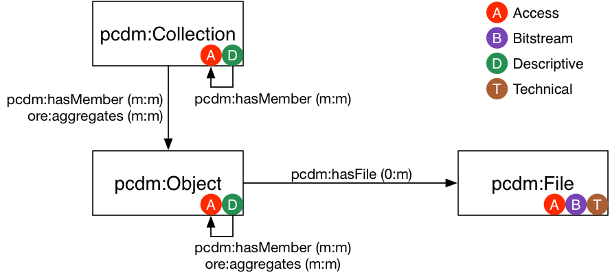
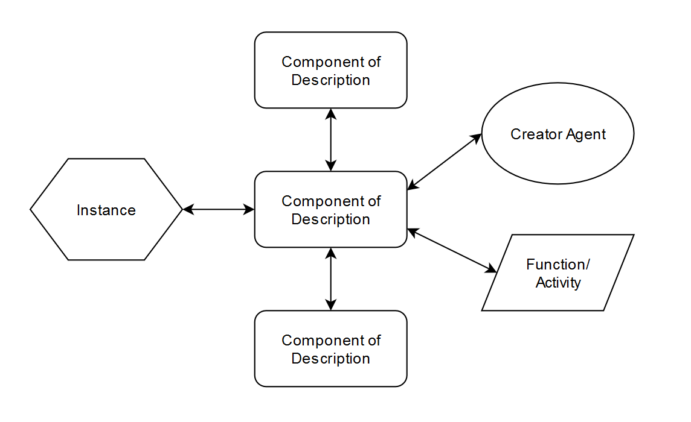

<!DOCTYPE html>
<html lang="en">
  <head>
    <meta charset="utf-8" />
    <meta name="viewport" content="width=device-width, initial-scale=1.0, maximum-scale=1.0, user-scalable=no" />

    <title>Didn’t we do this already? Better ways of thinking and doing “finding aid” aggregation</title>
    <link rel="stylesheet" href="./css/reveal.css" />
    <link rel="stylesheet" href="./css/theme/moon.css" id="theme" />
    <link rel="stylesheet" href="./css/highlight/zenburn.css" />
    <link rel="stylesheet" href="./css/print/paper.css" type="text/css" media="print" />

  </head>
  <body>
    <div class="reveal">
      <div class="slides"><section  data-markdown><script type="text/template">
<style>
#fLeft {float: left; max-width: 50%;}
#fRight {float: right; max-width: 50%;}
#smallLink {font-size: 18px;}
.whitebg {background-color: #fff; margin-top: 30% !important; padding: 15px !important; border-radius: 15px;}
.reveal section img {border: none;}
.reveal h1,
.reveal h2,
.reveal h3,
.reveal h4,
.reveal h5,
.reveal h6 {
	font-family: Roboto , sans-serif;
	text-transform: initial;
	font-weight: bold;
}
.wrap{
position:relative;
  height:30vh;
  border-left:15px solid #000;
  padding:5vh 20px;
}
.arrow {
  position:absolute;
  left:-43px;
  width: 70px;
  bottom: -20px;
}
.up{top:-20px;}
</style>

## Didn’t we do this already? <!-- .element: style="font-size: 77px;" -->
#### Better ways of thinking and doing “finding aid” aggregation


Gregory Wiedeman<br/>
University Archivist<br/>
University at Albany, SUNY
</script></section><section  data-markdown><script type="text/template">
### Archival Aggregation

* [Towards a National Finding Aid Network (NAFAN)](https://confluence.ucop.edu/display/NAFAN)
	* ["Finding Aid Aggregation at a Crossroads"](https://escholarship.org/uc/item/5sp13112)
* [EmpireADC](https://www.empireadc.org/) in New York
* [Records in Context (RiC)](https://www.ica.org/en/records-in-contexts-ric-a-standard-for-archival-description-presentation-congress-2016)
</script></section><section  data-markdown><script type="text/template">
### Records in Context (RiC)

* International Council on Archives (ICA)
* Experts Group on Archival Description (EGAD)
	* ISAD(G) which is basis for DACS
	* ISAAR(CPF) which is basis for EAC-CPF <!-- .element: class="fragment" -->
	* ISDF <!-- .element: class="fragment" -->
	* ISDIAH <!-- .element: class="fragment" -->
</script></section><section  data-markdown><script type="text/template">
### Records in Context (RiC)

* Description as Linked Data Graph
* Unify descriptive standards
	* ISAD(G), ISAAR(CPF), ISDF, ISDIAH
* [RiC Conceptual Model (RiC-CM)](https://www.ica.org/en/egad-ric-conceptual-model)
	* [TS-DACS comments](https://docs.google.com/document/d/1XoQmrT-kdj5fCKNcg0umghsWFORrKRf7rMsB4OsnY5o)
* [RiC Ontology (RiC-O)](https://www.ica.org/en/records-in-contexts-ontology)
	* [TS-DACS comments](https://docs.google.com/document/d/1sDHmtz3bgC207CO7pO8AhRtz3CYqwAByo3zgkLparHM)
* [Artefactual comments](https://groups.google.com/forum/#!topic/ica-atom-users/QwSor7OQ90U)
</script></section><section  data-markdown><script type="text/template">
### Archival Aggregation

* Bring together description across repositories
* Enable discovery in new ways
</script></section><section  data-markdown><script type="text/template">
## Didn't we already do this? <!-- .element: style="font-size: 77px;" -->
</script></section><section  data-markdown><script type="text/template">
### EAD and Regional Aggregators

* [Online Archive of California (OAC)](https://oac.cdlib.org/)
* [Texas Archival Resources Online](https://legacy.lib.utexas.edu/taro/)
* [Archives West](http://archiveswest.orbiscascade.org/)
* [Virginia Heritage](https://vaheritage.org/)
* ...
</script></section><section  data-markdown><script type="text/template">
### DPLA

* [Digital Public Library of America](https://dp.la/)
	* Hub system ([NY Hertiage](https://nyheritage.org/))


</script></section><section  data-markdown><script type="text/template">
### MARC-AMC

* MARC-AMC and APPM
* RLIN and OCLC Networks
* WorldCat


</script></section><section  data-markdown><script type="text/template">
### NHPRC Guide (1961)

* Philip Hamer, <i>Guide to Manuscript and Archival Materials in the United States</i>


</script></section><section  data-markdown><script type="text/template">
### NUC-MC

* National Union Catalog of Manuscript Collections
* LC Rules for Descriptive Cataloging in the Library of Congress: Manuscripts (1954)


</script></section><section  data-markdown><script type="text/template">
### We keep reinventing the wheel

* Lack of sustainable efforts <!-- .element: class="fragment" -->
* Based on specific outputs or tools <!-- .element: class="fragment" -->
	* Published guides
	* Catalog records and Bibliographic networks
	* EAD and XTF
	* --> Linked Data <!-- .element: class="fragment" -->
</script></section><section  data-markdown><script type="text/template">
### We need to stop combining description storage and display 

* "Finding Aid" is not a helpful concept
</script></section><section  data-markdown><script type="text/template">
## We need a common data model

Will allow us to present description in different views, formats, outputs as they change over time
</script></section><section  data-markdown><script type="text/template">
## "Migration issues"

(These are usually data issues) <!-- .element: class="fragment" data-fragment-index="1" -->

* "Does this tool import [EAD, MODS, etc.]?" <!-- .element: class="fragment" data-fragment-index="2" -->
* Giving up on standard formats somewhat <!-- .element: class="fragment" data-fragment-index="2" -->
* The data model is more important <!-- .element: class="fragment" data-fragment-index="2" -->
</script></section><section  data-markdown><script type="text/template">
### What is a common data model?

* Abstract
	* not tied to any specific format or system
* Strict
	* compartmentalizes information in sets of elements
* Structures
	* defines the relationships between elements
</script></section><section  data-markdown><script type="text/template">
#### Portland Common Data Model (PCDM)


</script></section><section  data-markdown><script type="text/template">
### No more of this nonsense


[This is actually the first language example in the EAD tag library](https://www.loc.gov/ead/tglib/elements/langmaterial.html) <!-- .element: class="fragment" -->

</script></section><section  data-markdown><script type="text/template">
### ArchivesSpace Data Model

```
{
  "expression": "1927-2000",
  "begin": "1927",
  "end": "2000",
  "date_type": "inclusive",
  "label": "creation",
  "jsonmodel_type": "date"
}
```
```
{
  "number": "44.4",
  "portion": "whole",
  "extent_type": "cubic ft.",
  "jsonmodel_type": "extent"
}
```
</script></section><section  data-markdown><script type="text/template">
#### You can still have narrative description

<div id="fLeft">
	
	Before v2.7.0
</div>
<div id="fRight"> <!-- .element: class="fragment" -->
	
	After v2.7.0
</div>


</script></section><section  data-markdown><script type="text/template">
### There are good ideas in RiC!

* Description as a linked graph
* Function authorities

I wish it tried to do less and the URIs were an afterthought.
</script></section><section  data-markdown><script type="text/template">
### There are good ideas from description theory

* Current practices fail to document the impact of archivists and their decisions on collections
* Michelle Light and Tom Hyry, ["Colophons and Annotations: New Directions for the Finding Aid," The American Archivist 65(2) (Fall/Winter 2002)](https://americanarchivist.org/doi/10.17723/aarc.65.2.l3h27j5x8716586q)
</script></section><section  data-markdown><script type="text/template">
### What this could look like


</script></section><section  data-markdown><script type="text/template">
### Common archival data model

* Will not solve all problems
* Makes everything more cost effective
* Easier to make aggregation efforts sustainable
* Allows for multiple displays/formats/outputs
* Gives more archivists a say
* Can empower small repositories without big tools
	* Lydia Lucas, ["Efficient Finding Aids: Developing a System for Control of Archives and Manuscripts," The American Archivist 44(1) (Winter 1981)](https://americanarchivist.org/doi/abs/10.17723/aarc.44.1.3u63r01w75m5p268)
</script></section><section  data-markdown><script type="text/template">
### Didn’t we do this already? <!-- .element: style="font-size: 77px;" -->
#### Better ways of thinking and doing “finding aid” aggregation


Gregory Wiedeman<br/>
University Archivist<br/>
University at Albany, SUNY</script></section></div>
    </div>

    <script src="./js/reveal.js"></script>

    <script>
      function extend() {
        var target = {};
        for (var i = 0; i < arguments.length; i++) {
          var source = arguments[i];
          for (var key in source) {
            if (source.hasOwnProperty(key)) {
              target[key] = source[key];
            }
          }
        }
        return target;
      }

      // Optional libraries used to extend on reveal.js
      var deps = [
        { src: './plugin/markdown/marked.js', condition: function() { return !!document.querySelector('[data-markdown]'); } },
        { src: './plugin/markdown/markdown.js', condition: function() { return !!document.querySelector('[data-markdown]'); } },
        { src: './plugin/highlight/highlight.js', async: true, callback: function() { hljs.initHighlightingOnLoad(); } },
        { src: './plugin/zoom-js/zoom.js', async: true },
        { src: './plugin/notes/notes.js', async: true },
        { src: './plugin/math/math.js', async: true }
      ];

      // default options to init reveal.js
      var defaultOptions = {
        controls: true,
        progress: true,
        history: true,
        center: true,
        transition: 'default', // none/fade/slide/convex/concave/zoom
        dependencies: deps
      };

      // options from URL query string
      var queryOptions = Reveal.getQueryHash() || {};

      var options = extend(defaultOptions, {"transition":"fade"}, queryOptions);
    </script>


    <script>
      Reveal.initialize(options);
    </script>
  </body>
</html>
